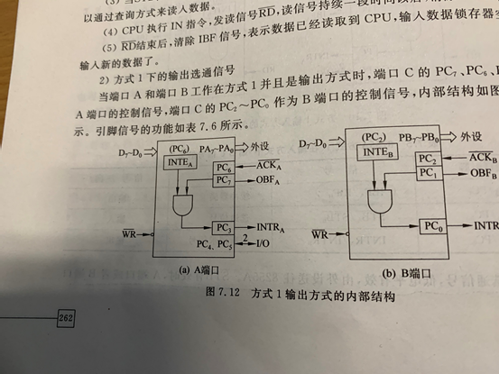

原文连接:https://www.cnblogs.com/Kevin-Weng/p/12005254.html
并行通信接口8255A
AB口为两个数据端口，C口可以作为数据端口也可以作为状态端口
8255A是一个40引脚的双列直插式芯片
引脚如下
D0－D7：双向数据信号线。
RD：读信号线。
WR：写信号线。
CS：片选信号线。
A0、A1：口地址选择信号线。
00--A端口；01--B端口；10--C端口；11--控制口。
RESET：复位输入信号，复位时三个端口自动置为输入口
PA0－PA7：A口的8条输入输出信号线。
PB0－PB7：B口的8条输入输出信号线。
PC0－PC7：C口的8条输入输出信号线。
数据端口：8255A具有3个8位的输入输出端口，即PA0-PA7，PB0-PB7，PC0-PC7，这三个端口分别受到A，B控制，端口C被分为两部分。一般情况下，C用来配合 A和B
端口A具有一个8位数据输入锁存器和一个数据输出锁存器/缓冲器；
端口B具有一个8位数据输入缓冲器和一个数据输出锁存器/缓冲器；
端口C具有一个8位数据输入缓冲器和一个数据输出锁存器/缓冲器，一般作为控制或状态信息端口。
数据总线缓冲器：是一个双向的、三态的8位数据寄存器，他与系统总线相连，构成CPU和8255A之间的数据通道
A组控制电路和B组控制电路
控制端口A与端口C的高4位（PC7-PC4）
控制端口B与端口C的低4位（PC3-PC0）
读写控制逻辑：接受CPU的控制信号，并将其组合成A和B组的控制信号
RESET 复位信号
CS# 片选信号，通常由高位地址译码产生
A1，A0选择端口（端口选择信号）00为选择A，01选择B，10选择C，11只能从总线读取数据，D7为1的时候写入方式控制字，D7为0的时候对C进行复位
RD# 读信号，低电平有效，当为低电平的时候，CPU可以从8255中读取数据
WD# 写信号，低电平有效，当为低电平的时候，CPU可以往8255A中写数据/控制字
下面介绍8255A的工作模式
方式0
方式0式基本的输入输出方式，不需要应答式联络信号
任何端口都可以做输入输出，特别是C端口，高四位和低四位可以分别设置
一般用于无条件传输/程序查询式传输
8255A中方式0对输出进行锁存（和总线相连肯定要锁存的），输入不锁存
8255A中没有时钟输入信号，所有的时序都是由引脚控制信号定时的
当CPU执行IN指令的时候，产生RD#信号，控制8255A从端口读取外设的输入数据，然后从D0-D7中输入到CPU
当CPU执行OUT指令的时候，产生WD#信号，完成CPU从端口向外传输数据
方式1
方式1是单方向的输入/输出工作模式
将3个端口分成两组，端口A和B可以两个数据口，分别工作在方式1，而端口C用来配合端口A和B在方式1下进行工作，作为选通信号
注：
A口工作于方式1输入，固定用PC5-PC3作联络信号线；
A口工作在方式1输出的时候，PC7，PC6和PC3作为选通信号
B口工作于方式1输入输出的时候，固定用PC2-PC0作联络信号线。
如果AB都用方式1进行传输，C口剩下的两位可以工作在方式0下
在8255方式1下，输入输出都可以锁存
方式1进行输入的时候

所用到的控制信号的定义如下：
① STB为低电平有效的输入选通信号，由外设提供的输入信号，当它有效时，把输入装置来的数据送入输入锁存器。
② IBF为高电平有效的输入缓冲器满信号，通知外设送来的数据已被接收，由STB信号的前沿产生。当CPU用输入指令读走数据后，此信号被清除。
③ INTR为中断请求信号，高电平有效。CPU响应中断请求后在服务程序中读走数据时，由RD信号将其清除。
④ INTE为中断允许状态，可事先用位控方式写入。
实现过程如下
- 当外设数据准备好的时候，将选通信号STB#设置为有效，来通知8255
- 8255利用STB#信号，将数据锁存到数据锁存器中，置缓冲区满，IBF信号有效，缟素外设数据已经读入，防止再次读入数据
- 当STB#和IBF都为高，触发中断，向CPU发中断请求INTR（CPU也可以用查询方式）
- CPU执行IN指令，发出RD#信号，信号持续一段时间后抹除INTR
- RD#信号结束后，清除IBF信号（表示数据已经送到CPU中，输入锁存器空了），接着从外设读取数据
方式1下的输出
当端口A和B都处于方式1工作的时候，PC0-PC2，PC3，PC6，PC7控制A
控制的引脚如图

关于控制信号的含义
控制过程如下
当CPU相应了8255的中断后，发出WD#信号，输出数据到锁存器中。输送完了之后，WD有效的时候，打开OBF#为0，缓冲器满，告诉CPU不要写数据到8255A了，（OBF#也是外设的选通信号）同时INTR为0（已经响应了中断）。当外设读完了数据，WD为1，发送响应信号ACK#，ACK#的上升沿也把OBF置为1，缓冲器空，INTR为1，发送下一个中断，可以读下一个数据了
方式2 双向传输方式（只适用于A端口）
当A端口工作方式2的时候（需要PC3-PC7），B口还可以工作在方式1（需要PC0-PC2）和方式0（PC0-PC2可以在方式0啦）
方法和方式1的输入输出是一样的
如果A口外设输入数据到8255中的时候，STB#有效，外设数据输入到A的PA0-PA7，输完数据后，STB为1，同时IBF为1，触发中断，INTR为1，CPU响应中断，发出IN指令，RD为0，当RD有效的时候，INTR为0（表示已经响应了中断），数据传输到数据总线中，读完后，INFA为0，继续开始读取数据
如果8255发送了一个中断，CPU响应了中断，发出WR#信号，数据从总线中到锁存器中，在WR有效的时候清除INTR（响应了中断）。同时让OBFA为0（PC7），告诉外设要读数据了，外设读完后发出响应信号ACK#，ACK上升沿恢复为1的时候，触发OBFA为1，又触发了中断
注意，由于A口的输入锁存器和输出锁存器是互相独立的，故当CPU向A口输出数据时，外部设备也可同时向A口输入数据。反之亦然。
8255A的初始化编程
要使用8255A，必须要初始化编程
有两种方式（都是在同一个端口）
第一种，方式选择控制字
从高将其
第一位，选择控制字的方式，0为位操作（操作PC的），1为控制方式
如果我们选1，就是控制字方式
2，3位是选择端口A的工作方式，00为方式0，01为方式1，10为方式2
接着4是决定这个A口是输入还是输出，输入为1，输出为0
5位是决定这个PC4-PC7输出（其实很好记，因为高位是控制A的），0位输出，1位输入
接着第6位是决定B的工作方式（为啥A有两位，B只有一位应该是B只能选择方式0和方式1吧）
第七位决定B的输入还是输出，0位输出，1位输入
第八位是决定C的低四位输入还是输出，输入位1，输出位0
注意：位控字是通过向8255A的控制寄存器写入的，不是直接对C口写入
第二种写控制字的方式是对C进行操作
第一位肯定要为0（为1就是上面了）
后面三位直接舍弃，不要操作（最好位000，方便计算，你不想算0101算到吐吧）
接着三位是选择C口的位数，这个就是2进制了，比如说010就是操作PC2，110就是操作PC6
最后1位用来复位，0位复位，1位置位
说句实话，这么看8255的难度也还好，但是8255真正难的地方是这玩意是一个扩展芯片，很适合和其他芯片一起来（比如说AD，DA芯片之类的，写作业的时候真的恶心）出大题。再加上汇编语言写个if语句都很麻烦，这玩意的出现简直是烦人，后面我也有自己总结这方面的大题的题目出来